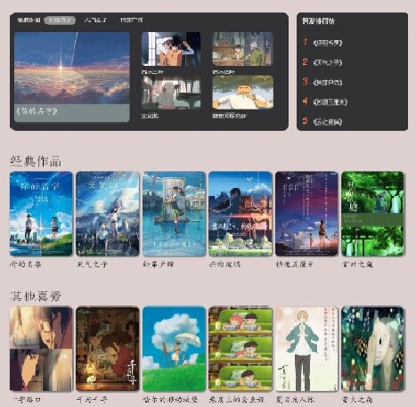

二、网站介绍：
1、主题：治愈空间 —— 简单介绍从小到大喜欢的治愈系动漫。
2、选题目的：画风治愈、内容治愈的动漫让人身心愉悦，希望让看到这个网站的人感到轻松，释放压力。
三、网站设计：
含实验报告在内共6张网页：
3张页面分别介绍《龙猫》、《国王排名》及新海诚的作品;
1张页面以轮播图作为图片小展;
1张登录页面;
1张报告页面;
四、网站内容
(视频和龙猫、国王排名页面的可爱字体加载时间较长，辛苦老师耐心等待)：
1、新海诚作品页面：
（1）运用 float + clear 实现精美布局

（2）运用 js + css 实现页面的跳转（亮点）
2、《国王排名》页面：
（1）运用 js + css 实现精美的视频播放效果（亮点）
（2）大量使用 flex 布局，但效果不明显
3、《龙猫》页面：
（1）运用 js + css 实现精美的侧边栏按钮（亮点）
（2）运用 js + css 实现精美的手风琴样式和名片放大效果（亮点）
（3）大量使用 flex 布局，且有较为明显的效果（亮点）
（4）运用 table 标签制作了一个细致的表格
4、图片小展：
（1）运用 js + css 实现特别的图片轮播效果（亮点）
ps：轮播动画的设置费了一番功夫
5、登录页面：
（1）运用 js + css
实现注册与登录的切换，点击登录或切换可进入报告界面（亮点）
6、精美导航栏（以龙猫页面的最为精美）：
鼠标移上去可以发现字体略微放大，文字设有倒影，链接下方出现颜色条，细节满满！
五、总结：
整个网站细节满满，链接变色，字体样式，字体大小，盒子边框，盒子大小，等等等等都是一点一点改出来的，费尽了我的心血和我为数不多的头发，
我先设计好网站的主题和框架，又在B站和w3school上进行了更深入的学习，不停敲敲改改完成了自己的小网站，内容技术要求都有意识地去完成了，同时也没有局限于课堂上所学的内容，
学了敲，敲了学，对html，css，js都有了更多的了解，虽然有时心好累，但敲起来还是兴致勃勃。虽然还有很多需要学习的内容，但我还比较满意自己这次的作业。
最后，感谢老师，感谢w3school，感谢B站！祝诸事顺意，新年快乐！
六、展望：自己对这门课程很感兴趣，会继续一直学习下去！